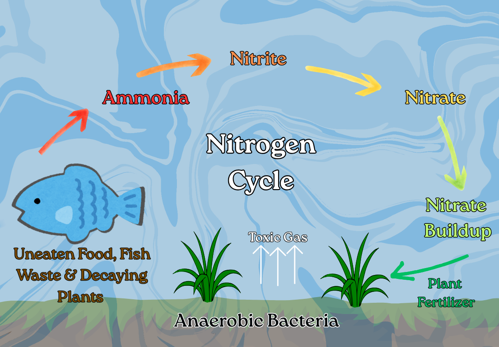

Pond Care Guide
It’s important for pond enthusiasts to understand that any body of water is a living ecosystem, and will require regular maintenance to stay healthy and attractive. If a pond is well-planned and built, it should not be overly difficult to maintain. Periodic water changes, regular testing of the water’s chemistry, plant pruning, cleaning the skimmer and filter, and adding beneficial bacteria are relatively simple and don't take much time. However, other tasks like dealing with algae, predators, or seasonal changes can be more time-consuming, or may even require professional help.
The Nitrogen Cycle
Understanding the nitrogen cycle is the most important thing you can do for managing water quality and the overall health of your aquatic ecosystem. Here's the basic idea: as organic matter breaks down in the water, it creates ammonia. This is very deadly for fish. Fortunately, there are bacteria in the water that will break it down into nitrite over time. Nitrite is a lot less toxic to fish. Next, more bacteria will break the nitrite down even further into nitrate. Nitrate is not only safe for fish, but it's fertilizer for your plants! Small amounts of ammonia and nitrite are relatively normal in any pond, assuming that the cycle is working and on-going. The trick is to keep those levels under control, and a well-designed pond, with proper filtration and a good skimmer should do just that... assuming you maintain a reasonable bioload.

Bioload
Bioload refers to the amount of organic matter that is breaking down in your pond. This includes fish feces, decaying plants, leaves that fall in from nearby trees, and even uneaten fish food! Any time the bioload increases very rapidly in a short period of time, there is a risk of ammonia spike. Because it takes quite a while for the good bacteria to catch up with the increased workload, ammonia levels can get out of control very quickly. This can be a recipe for disaster. That's why it is crucial to keep your pond's bioload as steady as you can. Keep it free of debris, don't add too many fish at once, and always remember... DON'T OVERFEED THEM! Give them only what they will eat entirely at a feeding. Any remaining food will just turn into ammonia.
Algae & Green Water
Pond owners often find algae to be a frustrating summer problem. When sunshine warms the water, oxygen levels dip, and nutrients abound, these microscopic organisms thrive and can quickly dominate a pond. Interestingly, algae actually play a beneficial role in a pond's ecosystem, so a certain amount is healthy and normal. These tiny plants serve as food for fish and create excellent habitats for small invertebrates like insects and worms. However, algae overgrowth has significant downsides. Beyond being unattractive and smelly, unchecked algal blooms can deplete oxygen, harm fish, and in extreme cases, could lead to fish die-offs. Taking a proactive approach to pond management is the most effective strategy for controlling algae. Regular water changes and a collection of heavy-consumer plants will help you avoid the accumulation of excess nutrients.
pH and KH
Aquarium hobbyists know that both pH and KH are crucial for maintaining a healthy and stable environment for fish and other aquatic life. Well, a pond is nothing more than a giant aquarium. pH refers to how acidic or alkaline the water is, and affects the solubility of minerals and gases. Koi are at their healthiest when the pH is slightly alkaline, between 7.0 and 8.5. Extreme pH fluctuations, either high or low, will stress koi, make them more susceptible to disease, and is a common culprit in sudden, widespread fish kills. KH, aka carbonate hardness, helps buffer the water and prevent sudden, deadly pH swings. A healthy KH level between 5dKH and 20dKH leads to a stable koi pond. Every aquarist should keep a water quality test kit on hand, and use it regularly.
Predators & Vector Control
Ponds can attract a variety of predators, including birds like herons and kingfishers, and mammals like raccoons, community cats, and even otters. Even the well-intentioned addition of a pet frog or turtle can become an unforeseen threat to your smaller fish. While the koi would not be in any danger, a fully grown bullfrog or extra-large turtle can easily eat your goldfish and minnows. When it comes to large koi, the most common threats are raccoons and herons. Raccoons can easily be mitigated by proper design - a large, deep pond is always better, providing the koi a place to get away, as raccoons do not like to swim. Herons are another story entirely. They are stealthy, patient, relentless, and a lot harder to thwart once they have discovered a food source.